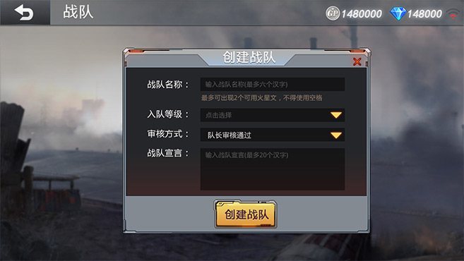
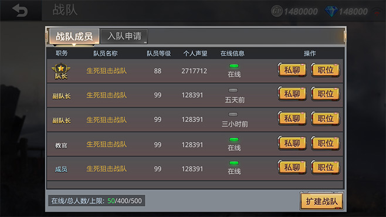
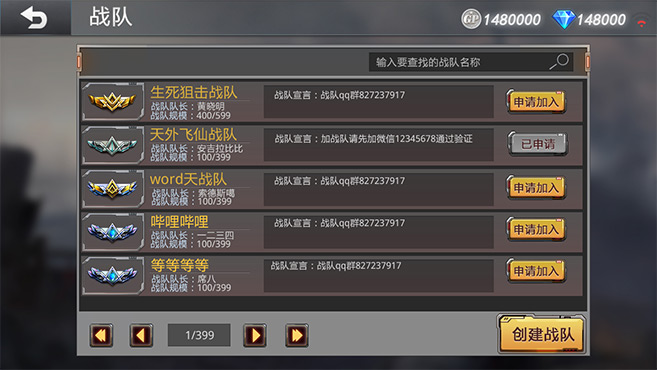
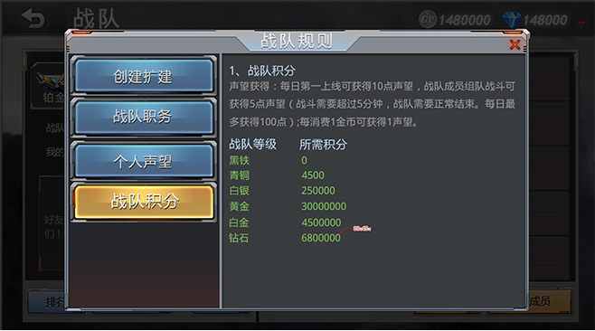

【创建战队】：
1、个人等级>=10级，50000GP
2、当前没有战队，且退出战队超过24小时
3、战队名称最长六字
4、创建的战队，默认成员数上限为50人


【战队功能】：
1、您加入战队后可以通过以下行为提高自己在战队中的声望。同时您在战队中的等级也 可以相应提升哦。
2、个人声望增加的同时也会增加战队积分，战队积分用来提升战队等级。
3、后续会陆续开放如战队约战、留言等功能。


战队简介：新春版本为志同道合的生死之交开辟战队系统，一个人的战斗变成一群人的战场 与生死之交建立一支属于自己的铁血军团，兄弟并肩，踏平战火狼烟！
1、自更新起至2月8日23：59，，以战队积分为依据，前16名战队正式进入全区战队赛。
2、每只队伍最高6人，每战队最多可派选2队参与比赛，赛事更多进程请关注手游官网。
3、最终获胜战队获得最强战队最高荣誉，同时参赛队员及全队队员可获得丰厚奖励！